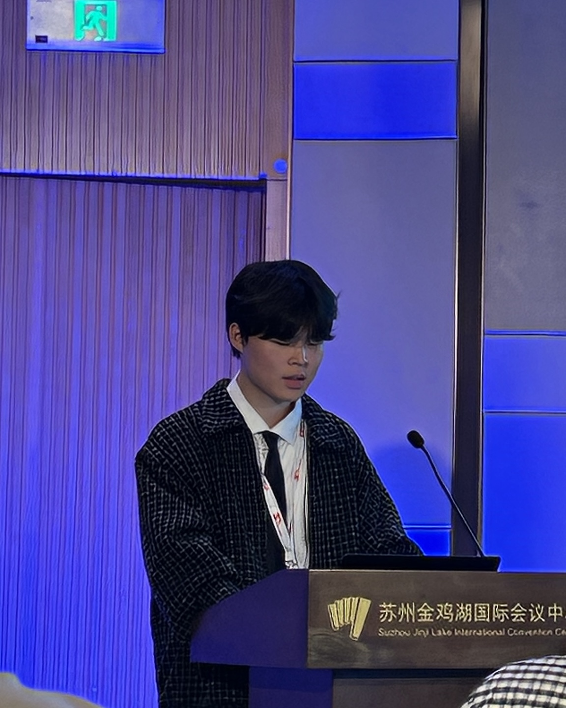
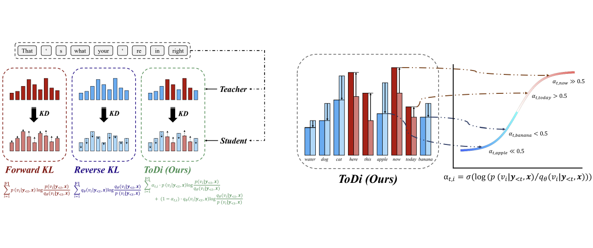

|
 @EMNLP 2025 Oral |
Seongryong Jung I am a research intern at Princeton University under the supervision of Prof. Zhuang Liu. I am also an undergraduate student in Artificial Intelligence at Chung-Ang University in Seoul, Korea. My research focuses on scaling agentic intelligence to increasingly complex and open-ended tasks, with the broader goal of building self-improving AI systems that continually learn from their own experiences. I am also interested in open foundation models and how they can make advanced AI more accessible and extensible. At Trillion Labs, I worked on foundation model post-training, with a focus on knowledge distillation and continual learning for large language models. My prior work was nominated for an outstanding paper award at EMNLP. |
Seeking Ph.D. opportunities starting in Fall 2027!
News
|
Publications |

|
Correctness-Dependent Asymmetric Target Distributions for Self-Distillation Policy Optimization
† Equal contribution Preprint project / arXiv / bibtex |
|
 |
ToDi: Token-wise Distillation via Fine-Grained Divergence Control
Proceedings of the 2025 Conference on Empirical Methods in Natural Language Processing (EMNLP 2025) Oral Presentation / Outstanding Paper Award Nominee (top 0.9%; 75 shortlisted) project / paper / arXiv / code / bibtex |
Experiences
Princeton University
Oct. 2026 – Present
Remote
Korea University
Jul. 2026 – Oct. 2026
Seoul, Korea
Trillion Labs
Mar. 2026 – Jun. 2026
Seoul, Korea
DMT Labs
Mar. 2025 – Jun. 2025
Seoul, Korea
Education
Chung-Ang University
Mar. 2023 – Present
Seoul, Korea
Tokyo Metropolitan University
Oct. 2025 – Mar. 2026
Tokyo, Japan
Awards & Honors
Languages
TrajectoryPost-training
|